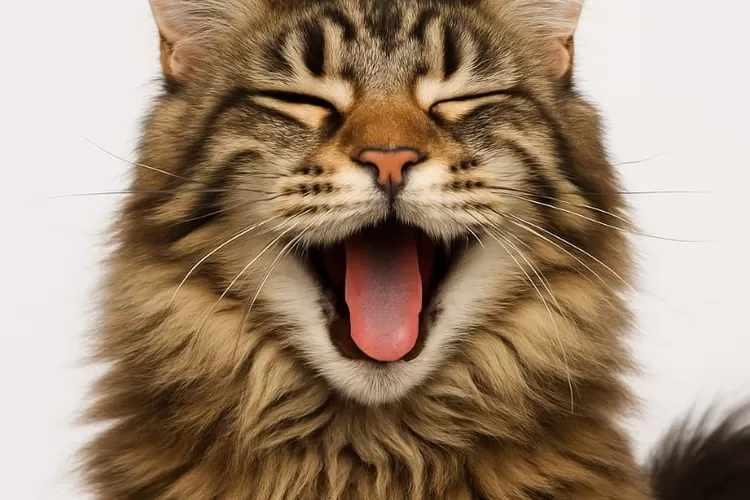

Tentang Komunitas Kami
Komunitas Pecinta Kucing Jakarta (KPKJ) adalah sebuah wadah non-profit yang terbentuk dari kecintaan yang sama terhadap kucing. Kami aktif mengadakan berbagai kegiatan mulai dari kumpul santai, seminar kesehatan kucing, hingga aksi adopsi dan penyelamatan (rescue).

Jadwal Acara Mendatang
| Tanggal | Kegiatan | Lokasi |
|---|---|---|
| 12 Oktober 2025 | Kumpul Bulanan & Sesi Berbagi | Taman Suropati, Menteng |
| 19 Oktober 2025 | Aksi Steril Bersama Subsidi | Klinik Hewan PetCare, Kemang |
| 26 Oktober 2025 | Kunjungan & Donasi ke Shelter | Rumah Kucing Parung |
Video Lucu Kucing Kami
Lihat tingkah lucu para anabul (anak bulu) dari anggota kami!